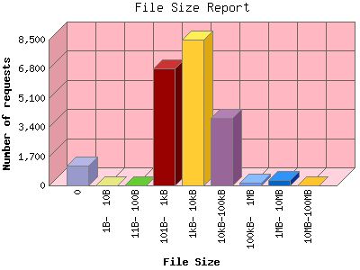

Analog 5.31
Analog 5.31 Report Magic 2.16
Report Magic 2.16The File Size Report categorizes the size of the file being requested. This can be useful in optimizing site performance. (Remember that on a 28.8Kps modem, it will take on average of 40 seconds to download 100Kb of data.)

| File Size | Number of requests | Percentage of the bytes | |
|---|---|---|---|
| 1. | 0 | 1,167 | 0.00% |
| 2. | 1B- 10B | 0 | 0.00% |
| 3. | 11B- 100B | 0 | 0.00% |
| 4. | 101B- 1kB | 6,814 | 0.32% |
| 5. | 1kB- 10kB | 8,494 | 4.18% |
| 6. | 10kB-100kB | 3,910 | 7.87% |
| 7. | 100kB- 1MB | 132 | 6.86% |
| 8. | 1MB- 10MB | 331 | 70.91% |
| 9. | 10MB-100MB | 6 | 9.88% |
This report was generated on May 6, 2008 05:30.
Report time frame July 18, 2007 21:56 to May 5, 2008 23:59.
| Web statistics report produced by: | |
| Analog 5.31 | Report Magic 2.16 |